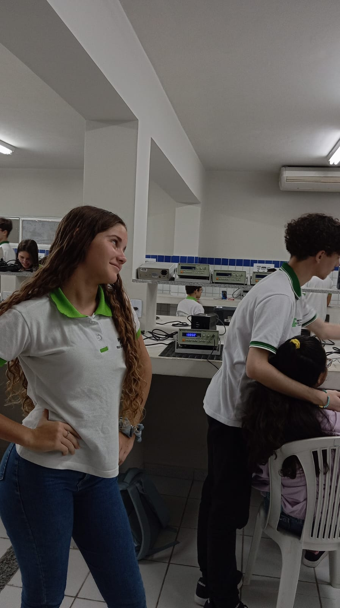
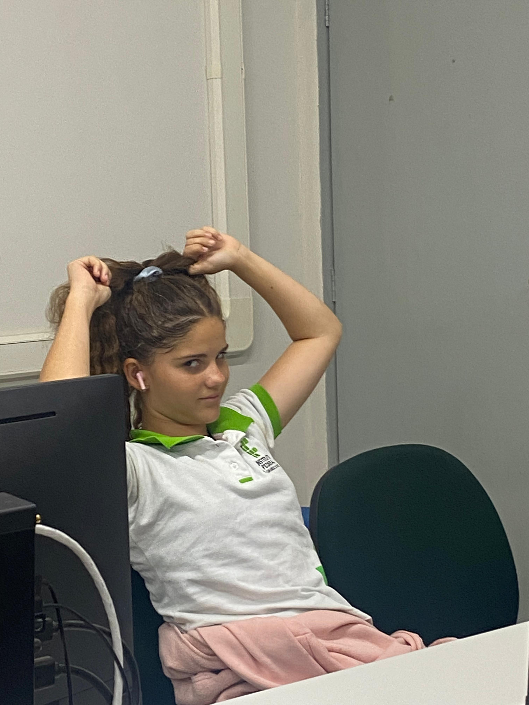
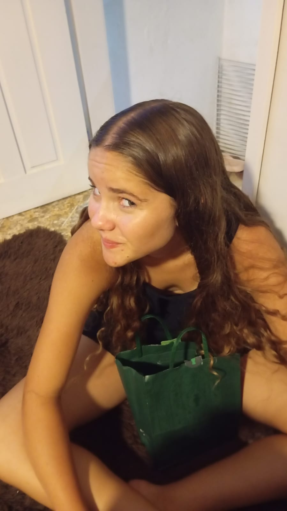
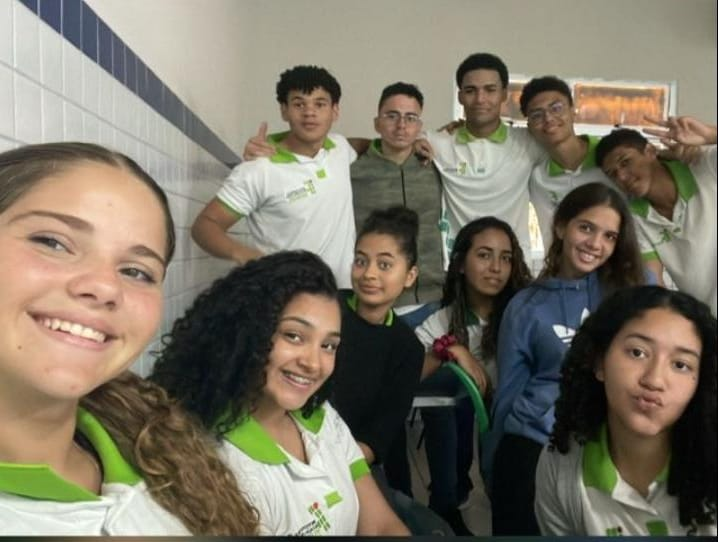
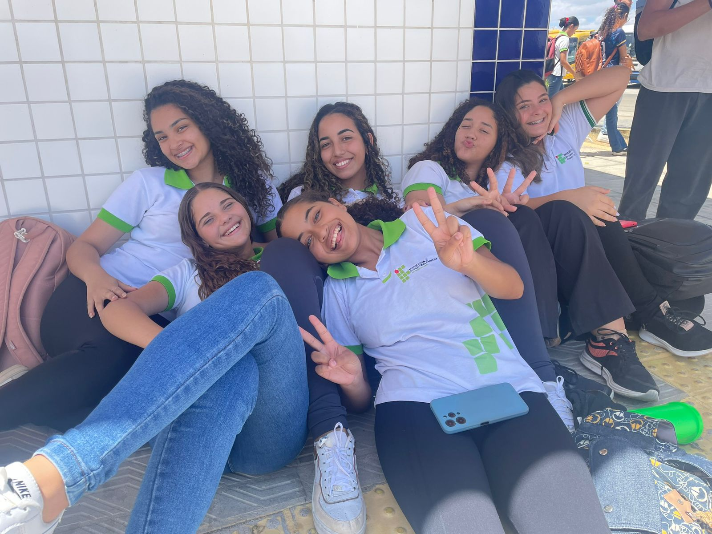
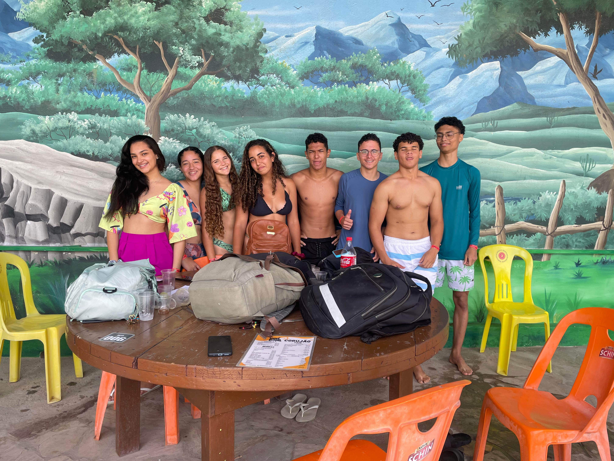

Sobre Aisla - loira
Olá! eu sou Aisla Stefane, tenho 16 anos, estudo no IFRN e curso informática, atualmente estou no primeiro ano do ensino integrado. Prático handebol, natação e futvolei. Minha cor favorita é verde, moro em Currais Novos, no Rio Grande do Norte. tenho um sitio chamado Maxinaré que tem lagos verdes como os meus zoi,gosto de pix, ficar tostada do sol na praia, e gosto de dormir na aula de Romulo

